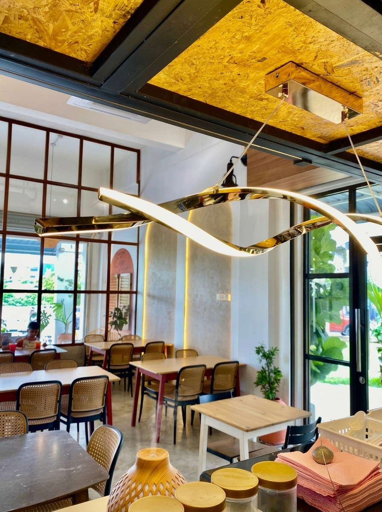
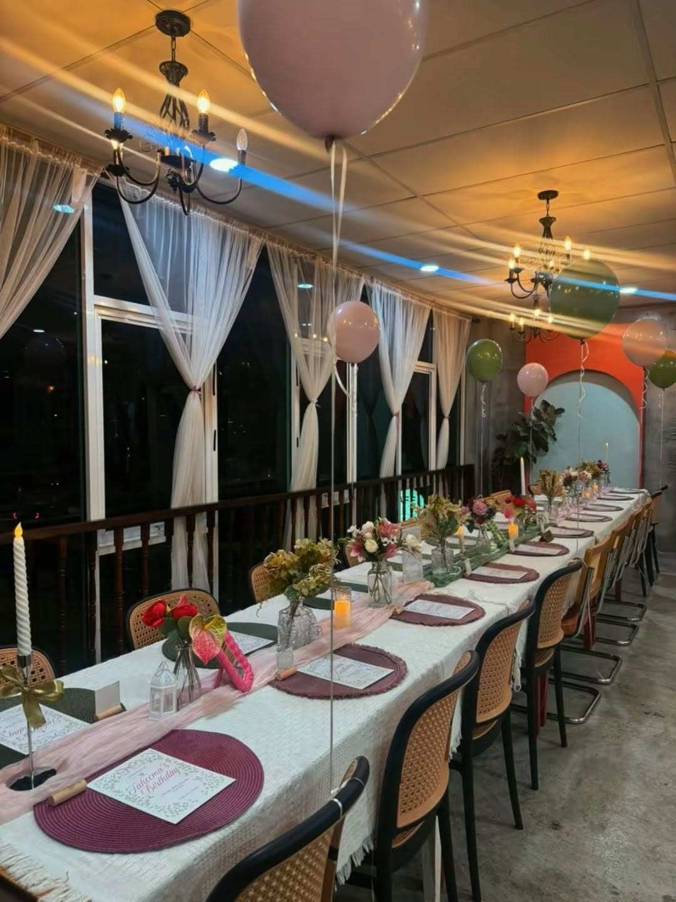
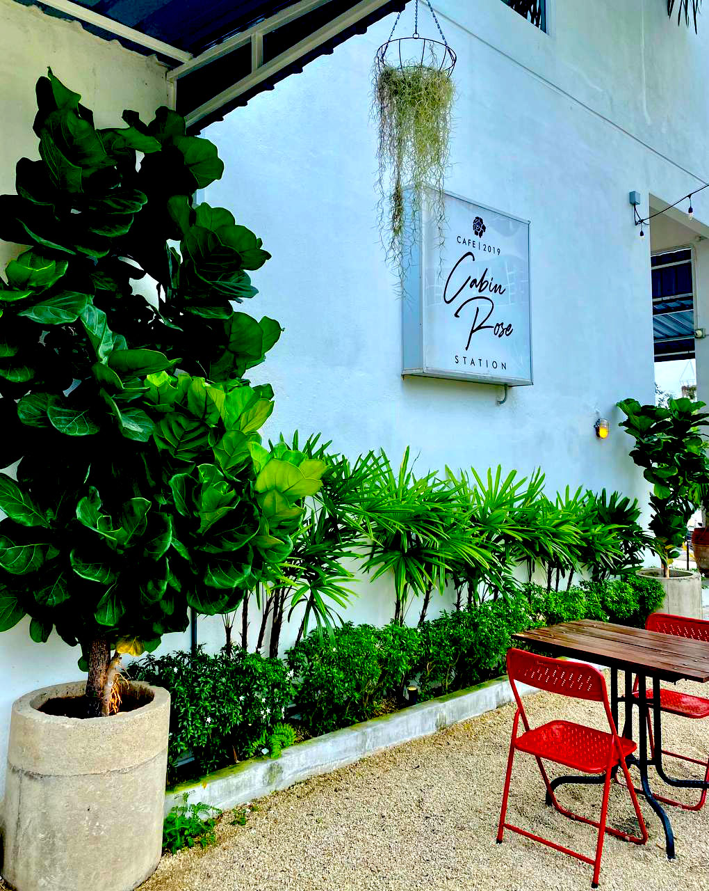

Paling laris
Corndog Signature
Rangup di luar, cheese melt di dalam. Sebab utama orang datang semula.
River Front, Kemaman
Corndog panas, nasi buttermilk dan western klasik di tepi Sungai Kemaman. Buka setiap hari sampai 11 malam.

Lepak dengan keluarga, pasangan atau satu geng. Ambil kunci anda dan klik peta di bawah.
Jamuan, birthday party, majlis rasmi dan buffet. Bagitahu tarikh, kami siapkan tempat dan makanan.
Tempah di WhatsApp
“Deko simple, minimalis dan aesthetic. Harga berpatutan, rasa memang sedap.”
“Corndog dia memang sedap. Wajib cuba kalau singgah Kemaman.”
“Tempat yang sesuai untuk keluarga, pasangan dan kawan-kawan.”

L-94-G, Jalan Raja Udang 3, River Front Business Centre, 24000 Kemaman, Terengganu